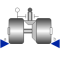

RevoluteWithLengthConstraintRevolute joint where the rotation angle is computed from a length constraint (1 degree-of-freedom, no potential state) |

|
Information
This information is part of the Modelica Standard Library maintained by the Modelica Association.
Joint where frame_b rotates around axis n which is fixed in frame_a. The two frames coincide when "phi + phi_offset = 0", where "phi_offset" is a parameter with a zero default and "phi" is the rotation angle.
This variant of the revolute joint is designed to work together with a length constraint in a kinematic loop. This means that the angle of the revolute joint, phi, is computed such that the length constraint is fulfilled.
Usually, this joint should not be used by a user of the MultiBody library. It is only provided to built-up the Modelica.Mechanics.MultiBody.Joints.Assemblies.JointXYZ joints.
In releases before version 3.0 of the Modelica Standard Library, it was possible to activate the torque projection equation (= cut-torque projected to the rotation axis must be identical to the drive torque of flange axis) via parameter axisTorqueBalance. This is no longer possible, since otherwise this model would not be "balanced" (= same number of unknowns as equations). Instead, when using this model in version 3.0 and later versions, the force in the length constraint component (Joints.SphericalSpherical or Joints.UniversalSpherical) must be calculated such that the driving torque in direction of the rotation axis is (RC shall be the name of the instance of RevoluteWithLengthConstraint):
0 = RC.axis.tau + RC.e*RC.frame_b.t;
If this equation is used, usually the force in the length constraint and the second derivative of the revolute angle will be part of a linear algebraic system of equations. In some cases it is possible to solve this system of equations locally, i.e., provide the rod force directly as function of the revolute constraint torque. In any case, this projection equation or an equivalent one has to be provided via variable "constraintResidue" in the "Advanced" menu of "Joints.SphericalSpherical" or "Joints.UniversalSpherical".
Parameters (9)
| animation |
Value: true Type: Boolean Description: = true, if animation shall be enabled |
|---|---|
| lengthConstraint |
Value: Type: Position (m) Description: Fixed length of length constraint |
| n |
Value: {0, 0, 1} Type: Axis Description: Axis of rotation resolved in frame_a (= same as in frame_b) |
| phi_offset |
Value: 0 Type: Angle_deg (°) Description: Relative angle offset (angle = phi + from_deg(phi_offset)) |
| phi_guess |
Value: 0 Type: Angle_deg (°) Description: Select the configuration such that at initial time |phi - from_deg(phi_guess)| is minimal |
| cylinderLength |
Value: world.defaultJointLength Type: Distance (m) Description: Length of cylinder representing the joint axis |
| cylinderDiameter |
Value: world.defaultJointWidth Type: Distance (m) Description: Diameter of cylinder representing the joint axis |
| positiveBranch |
Value: Type: Boolean Description: Based on phi_guess, selection of one of the two solutions of the non-linear constraint equation |
| e |
Value: Modelica.Math.Vectors.normalizeWithAssert(n) Type: Real[3] Description: Unit vector in direction of rotation axis, resolved in frame_a |
Inputs (2)
| cylinderColor |
Default Value: Modelica.Mechanics.MultiBody.Types.Defaults.JointColor Type: Color Description: Color of cylinder representing the joint axis |
|---|---|
| specularCoefficient |
Default Value: world.defaultSpecularCoefficient Type: SpecularCoefficient Description: Reflection of ambient light (= 0: light is completely absorbed) |
Connectors (6)
| frame_a |
Type: Frame_a Description: Coordinate system a fixed to the component with one cut-force and cut-torque |
|
|---|---|---|
| frame_b |
Type: Frame_b Description: Coordinate system b fixed to the component with one cut-force and cut-torque |
|
| axis |
Type: Flange_a Description: 1-dim. rotational flange that drives the joint |
|
| bearing |
Type: Flange_b Description: 1-dim. rotational flange of the drive bearing |
|
| position_a |
Type: RealInput[3] Description: Position vector from frame_a to frame_a side of length constraint, resolved in frame_a of revolute joint |
|
| position_b |
Type: RealInput[3] Description: Position vector from frame_b to frame_b side of length constraint, resolved in frame_b of revolute joint |
Components (3)
| world |
Type: World |
|
|---|---|---|
| R_rel |
Type: Orientation Description: Relative orientation object from frame_a to frame_b |
|
| cylinder |
Type: Shape |